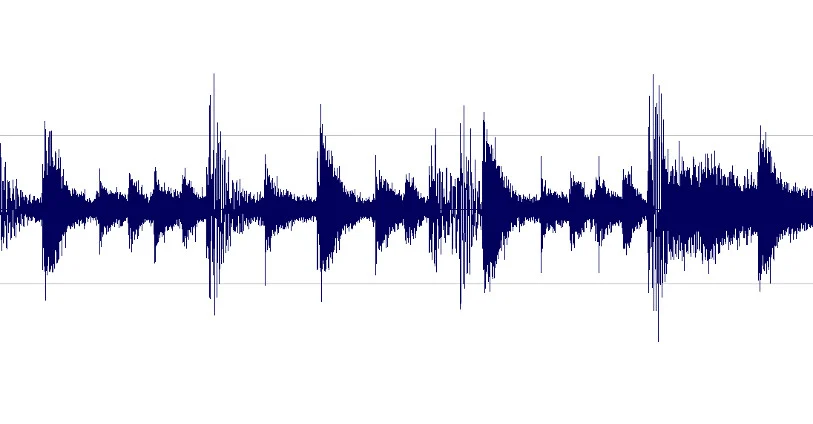

Een bitmapafbeelding bestaat uit rijen van pixels die samen een beeld vormen. Zoals ik ook al had uitgelegd op mijn kleurmodellen pagina, hoe meer pixels, hoe scherper je afbeelding is. De resolutie bij bitmapafbeeldingen is vast, dat betekent dat je de pixels kan gaan zien als je gaat inzoomen op een afbeelding.
Vectorafbeeldingen worden gevormd door kleuren en plaats te beschrijven. In plaats van pixels, bestaat een vectorafbeelding uit vormen, rondingen, lijnen en tekst die de afbeelding maken. Als op zo een afbeelding inzoomt, zie je dus geen pixels. Oftewel, de qualiteit van de afbeelding blijft hetzelfde.

In onze computers zitten speakers waar geluid op komt. Geluid is een trilling die door de lucht gaat. Als het wordt opgeslagen, wordt het ook in nullen en enen omgezet. Om een bepaalde tijd wordt er geluid omgezet. Dit heet samplen. Dit betekent dat de computer elektrische signalen omzet in digitale waarden. Het geluid wordt iedere bepaalde tijdsperiode gemeten. Deze samples kan je in een grafiek zetten. De waarden die je in de grafiek kan aflezen, kunnen worden omgezet in binaire getallen. Elk binair getal heeft dus de intensiteit van het geluid.
De hoeveelheid samples die een geluid heeft, kan je vergelijken met het aantal pixels dat een afbeelding heeft. Hoe meer, hoe beter de kwaliteit.